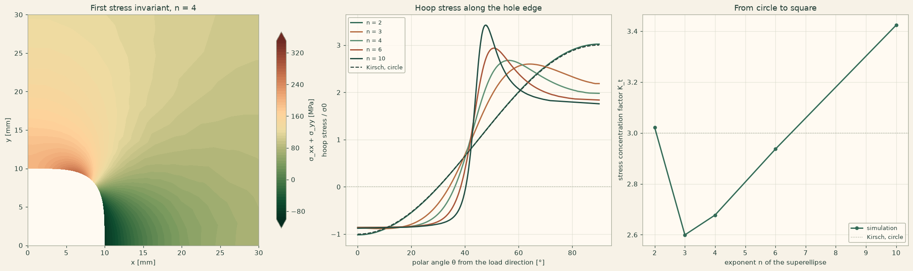
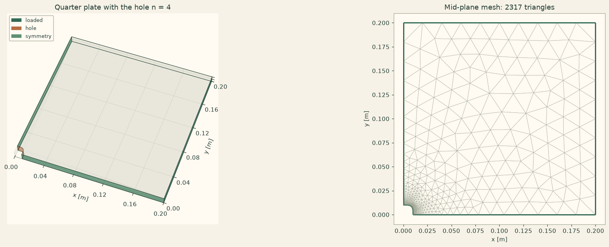

Docs › Examples › Stress concentration at a superelliptic hole
Linear elasticity · 2D
Stress concentration at a superelliptic hole
Plates with holes between a circle and a rounded square, the superellipse |x/a|^n + |y/a|^n = 1, pulled in one direction.
Run locally with OneSimulation. The example downloads are free. Running them requires an activated runtime. Runtime Alpha 0.2.1a7 · CPython 3.13 on macOS (Apple Silicon), Ubuntu 22.04 (x86-64), and Windows x64. Installation and activation · View pilot plans. Scope of the reference checks.


What it computes
OneSimulation cuts five plates with n = 2 to 10 from their STEP files to the mid-plane and solves plane stress with quadratic triangles graded to the hole; the hoop stress along each edge is the first stress invariant, evaluated from the displacement gradient. The script that builds the STEP files comes with the notebook.
What it checks
The circular hole gives K_t = 3.021 against Kirsch's 3 (+0.71 %) with the hoop stress along the edge within 0.022 σ0 of the closed form; the factor falls to 2.60 at n = 3 and rises to 3.42 at n = 10 as the peak moves from 90° to 48°.
Geometry
The notebook starts at the import of the CAD files superellipse_hole_stress_concentration.step, superellipse_hole_stress_concentration_n10.step, superellipse_hole_stress_concentration_n2.step, superellipse_hole_stress_concentration_n3.step, superellipse_hole_stress_concentration_n6.step: STEP (AP242), readable by any CAD program, with the names of the faces that the boundary conditions use. Put them next to the notebook.


The geometry script
The script superellipse_hole_stress_concentration_geometry.py builds the geometry with the CAD objects of OneSimulation and writes the files. Change a dimension there, run it, and run the notebook again.
"""Geometry of the OneSimulation example "Stress concentration at a superelliptic hole".
Builds one quarter of a square plate (half-width 200 mm, 10 mm thick) with a central superelliptic
hole |x/a|^n + |y/a|^n = 1, a = 10 mm, with the CAD objects of OneSimulation, for the exponents
n = 2, 3, 4, 6 and 10. The plate with n = 4 is written to superellipse_hole_stress_concentration.step,
the others to superellipse_hole_stress_concentration_n2.step, _n3, _n6 and _n10. The hole outline is
a polygon through 480 points of the curve. The faces are named hole, loaded (x = 200 mm),
symmetry_x and symmetry_y.
"""
import numpy as np
from onesim.cad.d2 import Profile
from onesim.cad.d3 import Box, Prism
radius, half_width, thickness = 0.010, 0.200, 0.010
angle = np.linspace(0.0, 2 * np.pi, 480, endpoint=False)
for exponent, suffix in ((4, ""), (2, "_n2"), (3, "_n3"), (6, "_n6"), (10, "_n10")):
outline = radius * np.column_stack(
(
np.sign(np.cos(angle)) * np.abs(np.cos(angle)) ** (2 / exponent),
np.sign(np.sin(angle)) * np.abs(np.sin(angle)) ** (2 / exponent),
)
)
hole = Prism(
profile=Profile.polygon([tuple(p) for p in outline], name="hole"),
height=thickness,
)
plate = Box(length=half_width, width=half_width, height=thickness) - hole
faces = plate.boundaries
plate = plate.grouped(
loaded=faces.x_max,
symmetry_x=faces.x_min,
symmetry_y=faces.y_min,
hole=plate.select(
faces=lambda face: abs(face.normal[2]) < 0.5
and np.hypot(*face.center[:2]) < 1.5 * radius
),
)
plate.save(f"superellipse_hole_stress_concentration{suffix}.step")The notebook
The complete notebook, cell by cell. Run it to produce the figures and the comparison printout.
A superellipse \(|x/a|^n+|y/a|^n=1\) is a circle for \(n=2\) and approaches a square with sharp corners as \(n\to\infty\). Such holes appear as rounded window and hatch openings. A thin plate with a superelliptic hole carries a uniform tension \(\sigma_0\) in the \(x\) direction far from the hole. At the traction-free edge of the hole the only stress left is the hoop stress, which is there equal to the first stress invariant,
and its largest value divided by \(\sigma_0\) is the stress concentration factor \(K_t\). As \(n\) grows the edge facing the load becomes flat and the peak moves from the top of the hole towards the rounded corners. A slightly squarish hole spreads the stress and is gentler than the circle; with sharper corners the factor rises again above the circle's value.
The plates are quarters of a square of half-width \(L=20a\) with \(a=10\) mm, from the CAD files superellipse_hole_stress_concentration.step (\(n=4\)) and ..._n2, _n3, _n6, _n10.step; the script superellipse_hole_stress_concentration_geometry.py builds them with the CAD objects of OneSimulation.
| boundary | condition |
|---|---|
| \(x=0\) | \(u_x=0\) |
| \(y=0\) | \(u_y=0\) |
\(x=L\) (loaded) | traction \((\sigma_0,0)\) |
| hole and \(y=L\) | traction free |
Steel, \(E=200\) GPa, \(\nu=0.3\), \(\sigma_0=100\) MPa, plane stress.
Reference. For the circle, Kirsch's solution: \(\sigma_{tt}=\sigma_0(1-2\cos2\theta)\) on the edge, \(K_t=3\) (S. Timoshenko and J. N. Goodier, Theory of Elasticity, 3rd ed., McGraw-Hill (1970), Sec. 35). For square holes with rounded corners, W. D. Pilkey and D. F. Pilkey, Peterson's Stress Concentration Factors, 3rd ed., Wiley (2008), Ch. 4, shows the rise of the factor as the corners sharpen.
import numpy as np
from onesim.cad.exchange import load
from onesim.meshing import TriangularMesher
from onesim.physics.solid_mechanics import SmallStrainSolid
from onesim.visualization import plots, theme
theme.set()Geometry and mesh
load returns each plate, section its mid-plane region; the hole edge keeps its name cut.hole. The triangles are 0.25 mm on the hole edge and grade to 20 mm far from it.
exponents = (2, 3, 4, 6, 10)
plates = {
n: load(f"superellipse_hole_stress_concentration{'' if n == 4 else f'_n{n}'}.step")
for n in exponents
}
faces = plates[4].boundaries
radius, thickness = 0.010, plates[4].size[2]
regions = {
n: plate.section((0, 0, 1), origin=(0, 0, thickness / 2))
for n, plate in plates.items()
}
meshes = {
n: TriangularMesher(
target_size=0.02, grading=0.15, local_sizes={"cut.hole": 0.00025}
).generate(region)
for n, region in regions.items()
}
fig = plots.figure(1, 2, size=(14, 6))
plots.geometry(
plates[4],
selection={
"loaded": faces.loaded,
"hole": faces.hole,
"symmetry": faces.symmetry_x | faces.symmetry_y,
},
labels=False,
camera=plots.Camera(elevation=55, azimuth=-70),
title="Quarter plate with the hole n = 4",
ax=fig[0],
)
plots.mesh(
meshes[4],
groups=("all",),
legend=False,
title=f"Mid-plane mesh: {meshes[4].cell_count} triangles",
ax=fig[1],
)
plots.show()Model
youngs_modulus, poisson_ratio, remote = 200e9, 0.3, 100e6
steel = SmallStrainSolid(
youngs_modulus=youngs_modulus,
poisson_ratio=poisson_ratio,
kinematics="plane_stress",
thickness=thickness,
)
runs = {
n: steel.solve(
mesh=mesh,
times=(0.0,),
order=2,
tractions=((regions[n].boundaries.x_max, (remote, 0.0)),),
displacements=(
(regions[n].boundaries.x_min, "x", 0.0),
(regions[n].boundaries.y_min, "y", 0.0),
),
)
for n, mesh in meshes.items()
}Results
In plane stress Hooke's law gives the first invariant directly from the strain, \(\sigma_{xx}+\sigma_{yy}=E(\varepsilon_{xx}+\varepsilon_{yy})/(1-\nu)\); it is evaluated with the gradient of the displacement at 400 points along each hole edge, parametrised by the polar angle \(\theta\) from the load direction.
invariant = (
lambda result, points: youngs_modulus
/ (1 - poisson_ratio)
* np.trace(result.space.gradient(result.displacement[0], points), axis1=1, axis2=2)
)
theta = np.linspace(0.0, np.pi / 2, 400)
edges = {
n: radius
* np.column_stack((np.cos(theta) ** (2 / n), np.sin(theta) ** (2 / n)))
* (1 + 1e-6)
for n in exponents
}
hoop = {n: invariant(runs[n], edges[n]) / remote for n in exponents}
polar = {n: np.degrees(np.arctan2(edges[n][:, 1], edges[n][:, 0])) for n in exponents}
print("exponent n K_t polar angle of the peak")
for n in exponents:
print(f"{n:10d} {hoop[n].max():7.3f} {polar[n][np.argmax(hoop[n])]:12.1f}°")
print(
f"circle: K_t {hoop[2].max():.4f} against Kirsch 3.0000 ({100 * (hoop[2].max() / 3 - 1):+.2f} %), largest deviation of the hoop "
f"stress along the edge from σ0(1 - 2cos2θ): {np.abs(hoop[2] - (1 - 2 * np.cos(2 * np.radians(polar[2])))).max():.3f} σ0"
)Figure
The first stress invariant near the hole with \(n=4\), the hoop stress along the five hole edges, and the stress concentration factor over the exponent.
mesh = meshes[4]
fig = plots.figure(1, 3, size=(19, 5.5))
plots.heatmap(
1e3 * mesh.coordinates[:, 0],
1e3 * mesh.coordinates[:, 1],
invariant(runs[4], mesh.coordinates) / 1e6,
triangles=np.asarray(mesh.cells),
limits=(-100, 350),
label="σ_xx + σ_yy [MPa]",
xlimits=(0, 30),
ylimits=(0, 30),
xlabel="x [mm]",
ylabel="y [mm]",
title="First stress invariant, n = 4",
ax=fig[0],
)
plots.line(
y={f"n = {n}": (polar[n], hoop[n]) for n in exponents},
reference={"Kirsch, circle": (np.degrees(theta), 1 - 2 * np.cos(2 * theta))},
hlines=0.0,
xlabel="polar angle θ from the load direction [°]",
ylabel="hoop stress / σ0",
title="Hoop stress along the hole edge",
legend="upper left",
ax=fig[1],
)
plots.line(
list(exponents),
{"simulation": [hoop[n].max() for n in exponents]},
markers=True,
hlines={"Kirsch, circle": 3.0},
xlabel="exponent n of the superellipse",
ylabel="stress concentration factor K_t",
title="From circle to square",
legend="lower right",
ax=fig[2],
)
plots.show()Going further
Stretch the hole to \(|x/a|^n+|y/b|^n=1\) with \(b\neq a\) in superellipse_hole_stress_concentration_geometry.py, rotate it against the load, or load the plate in shear: the corners of a square hole are worst at \(45°\) to the load.